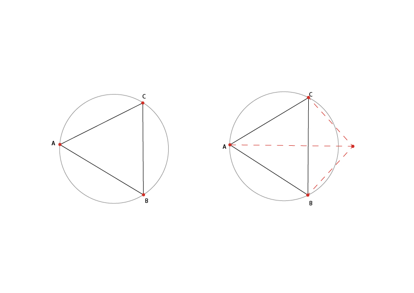
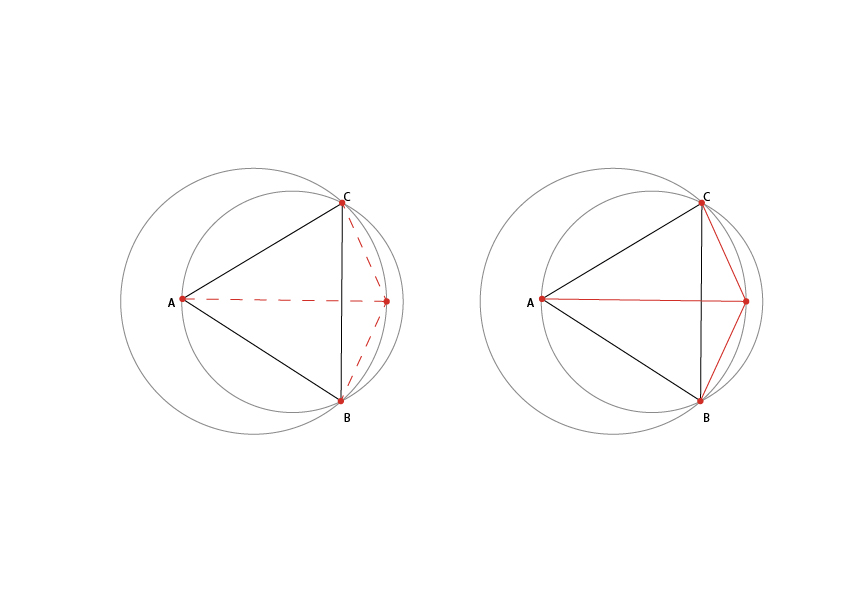
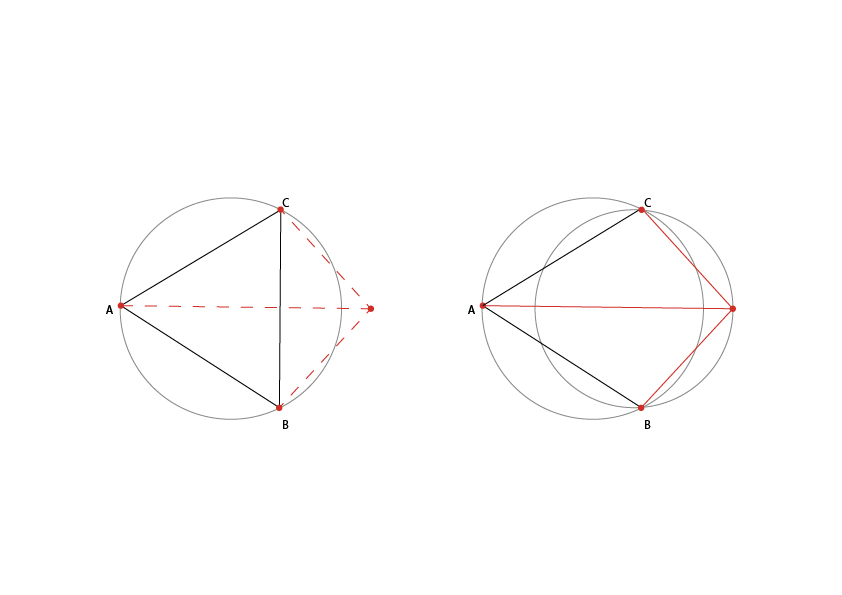
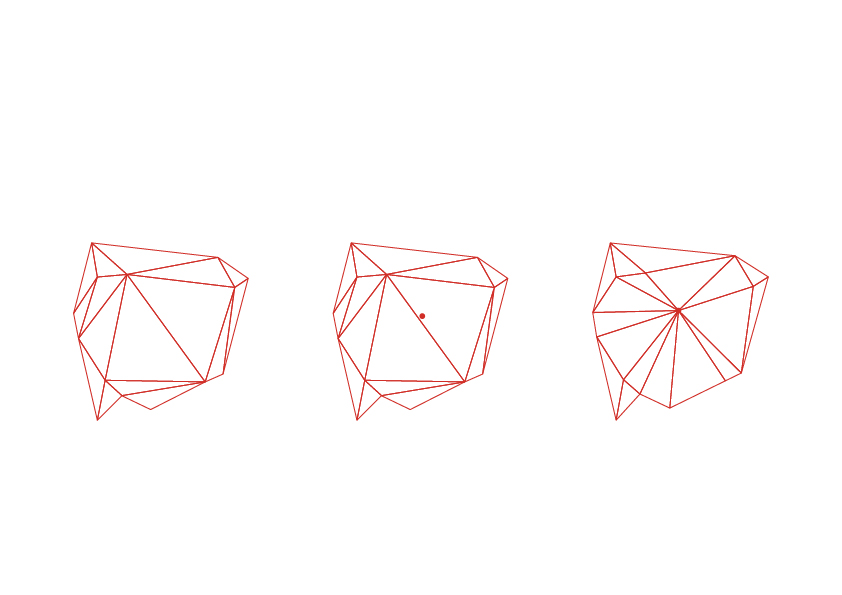

La triangolazione prende il nome da Boris Delaunay per il suo lavoro su di essa dal 1934. Questo criterio viene utilizzato nella creazione di meshes triangolari dato un numero di punti disposti arbitrariamente nello spazio. L’obiettivo è proprio quello di creare una superficie formata da triangoli di punti contigui vicini. Le intersezioni dei punti vengono collegate tramite una rete di triangoli non sovrapposti ed il più possibile compatti, fondamentale è che nessun punto cada all’interno di alcun circumcerchio.
NB: Il circumcerchio è la circonferenza circoscritta a un triangolo, ovvero l'unica circonferenza passante per tutti i suoi tre vertici, il cui centro è detto circocentro e il raggio circumraggio.
Clicca per creare tre vertici di un triangolo con corrispettiva circonferenza:E’ chiaro che il cerchio svolge un ruolo chiave nel criterio di tassellazione di Delaunay, una triangolazione basata su questo criterio è considerabile ottimale dal momento in cui:
- Tutti i triangoli formati dalla maglia sono non degenerati. Cioè, nessun insieme di tre punti collineari è collegato insieme in un unico triangolo.
- Tutti i triangoli nella maglia producono un circumcerchio che non contiene altri vertici della mesh ad eccezione dei tre vertici che definiscono il triangolo. Nei triangoli che hanno un lato in comune la somma degli angoli opposti a tale lato è minore di 180°.
Il triangolo ABC viene inscritto all’interno di un circumcerchio, se poniamo il vertice D esternamente alla circonferenza collegando ulteriormente i vertici per aggiungere il triangolo CBD, la rete risultante apparirà ottimale dal punto di vista del criterio di Delaunay.

Se il vertice D fosse posto all’interno del circumcerchio del triangolo ABC, la rete risultante non soddisferebbe i criteri di Delaunay, il vertice D sarebbe all'interno del cerchio per ABC, ma il vertice A sarebbe all'interno del cerchio per il triangolo CBD.

Ripristino dell’ottimalità di Delaunay In che modo possiamo correggere la suddivisione secondo il criterio? Infrangere il collegamento tra i vertici CB e creare un segmento AD. Ora il vertice C non coincide con la circonferenza del triangolo ABD ed il vertice B non coincide con il circumcerchio del triangolo CAD.

L'operazione che commuta il bordo comune tra due triangoli adiacenti è talvolta chiamata "flip". Quando un vertice viene inserito nella triangolazione, è possibile che questo si collochi all’interno di una circonferenza, in questi casi sarà necessaria la modifica delle forme preesistenti. Si crea così una nuova struttura che rispetta il criterio di Delaunay.

1. Incrementale
I punti vengono aggiunti uno ad uno ed ad ogni passo le proprietà della triangolazione di Delaunay vengono mantenute. Dal momento in cui vengono aggiunti punti, questi una volta congiunti ai vertici dei triangoli adiacenti devono soddisfare i requisiti.
2. Dividi et impera-Algoritmo DeWall
- Dopo aver stabilito il piano α, si costruisce il primo triangolo
- partendo dalla faccia ( lato in 2d) che interseca α si costruisce il triangolo successivo scegliendo il punto, dall’altra parte di α, che minimizza il raggio della circonferenza circoscritta.
- Applicare ricorsivamente l’algoritmo a S+ e S-.
- Restituire l’unione dei tre.